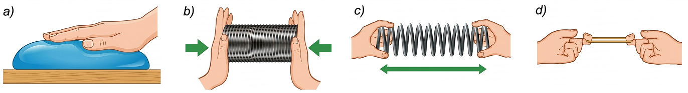
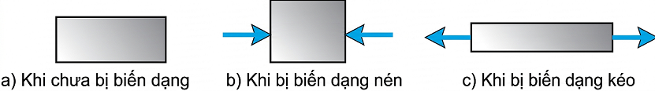
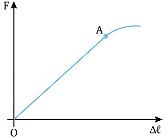
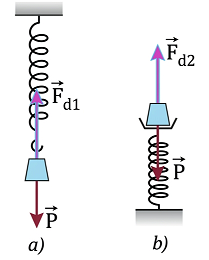
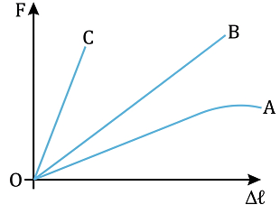

"Bungee là một trò chơi mạo hiểm được nhiều người yêu thích. Em có biết trò chơi này được thực hiện dựa trên hiện tượng vật lí nào không?"
I. BIẾN DẠNG ĐÀN HỒI. BIẾN DẠNG KÉO VÀ BIẾN DẠNG NÉN
Khi không có ngoại lực tác dụng, vật rắn có kích thước và hình dạng xác định.

Hình 33.1
Hãy làm các thí nghiệm về biến dạng sau đây:
- Ép quả bóng cao su vào bức tường (Hình 33.1a).
- Nén lò xo dọc theo trục của nó (Hình 33.1b).
- Kéo hai đầu lò xo dọc theo trục của nó (Hình 33.1c).
- Kéo cho vòng dây cao su dãn ra (Hình 33.1d).
1. Trong mỗi thí nghiệm trên, em hãy cho biết: Lực nào làm vật biến dạng? Biến dạng nào là biến dạng kéo? Biến dạng nào là biến dạng nén? Mức độ biến dạng phụ thuộc vào yếu tố nào?
2. Trong thí nghiệm với lò xo và vòng dây cao su, nếu lực kéo quá lớn thì khi thôi tác dụng lực, chúng có trở về hình dạng, kích thước ban đầu được không?
1. Lực tác dụng của tay ta (ngoại lực) làm các vật bị biến dạng.
- Biến dạng nén: Ép quả bóng, nén lò xo.
- Biến dạng kéo: Kéo hai đầu lò xo, kéo vòng dây cao su.
- Mức độ biến dạng phụ thuộc vào độ lớn của ngoại lực.
2. Nếu lực kéo quá lớn (vượt quá giới hạn đàn hồi), khi thôi tác dụng lực, lò xo và dây cao su không thể trở về hình dạng và kích thước ban đầu (bị biến dạng dẻo/hỏng).
Như vậy, khi có tác dụng của ngoại lực, vật rắn sẽ bị biến dạng. Mức độ biến dạng phụ thuộc vào độ lớn của ngoại lực.
Giới hạn mà trong đó vật rắn còn giữ được tính đàn hồi được gọi là giới hạn đàn hồi của vật rắn.

Hình 33.2: Sự biến dạng nén và kéo
- Khi vật chịu tác dụng của cặp lực kéo ngược chiều nhau, vuông góc với bề mặt của vật và hướng ra phía ngoài vật, ta có biến dạng kéo.
1. Em hãy cho biết loại biến dạng trong mỗi trường hợp sau: a) Cột chịu lực trong toà nhà. b) Cánh cung khi kéo dây cung.
2. Tìm thêm ví dụ về biến dạng nén và biến dạng kéo trong đời sống.
1.
a) Cột chịu lực trong toà nhà: Biến dạng nén (chịu sức nặng từ trên đè xuống).
b) Cánh cung khi kéo dây: Biến dạng uốn/kéo (tùy bộ phận, dây cung bị biến dạng kéo).
2. Ví dụ thêm:
- Biến dạng nén: Đệm mút khi ta ngồi lên, nhíp ô tô khi chở nặng.
- Biến dạng kéo: Dây cáp cần cẩu khi nâng hàng, dây thun buộc tóc khi bị kéo căng.
II. LỰC ĐÀN HỒI. ĐỊNH LUẬT HOOKE
1. Lực đàn hồi của lò xo
Khi ta nén hoặc kéo hai đầu lò xo, tay ta cũng chịu tác dụng các lực từ phía lò xo. Các lực này ngược chiều với lực tay tác dụng vào lò xo và được gọi là lực đàn hồi của lò xo.
Với các dụng cụ sau đây: giá đỡ thí nghiệm; các lò xo; hộp quả cân; thước đo.
Thiết kế và thực hiện phương án thí nghiệm tìm mối quan hệ giữa độ lớn của lực đàn hồi và độ biến dạng của lò xo. Hãy thể hiện kết quả trên đồ thị về sự phụ thuộc của lực đàn hồi vào độ biến dạng của lò xo.
Thiết kế thí nghiệm:
1. Treo lò xo thẳng đứng vào giá đỡ. Đo chiều dài ban đầu \( l_0 \).
2. Lần lượt móc các quả cân đã biết trước trọng lượng \( P \) vào đầu dưới lò xo. (Lúc cân bằng \( F_{dh} = P \)).
3. Đo chiều dài \( l \) tương ứng của lò xo khi treo quả cân. Tính độ biến dạng \( \Delta l = l - l_0 \).
4. Ghi bảng số liệu và vẽ đồ thị biểu diễn trục tung là \( F_{dh} \), trục hoành là \( \Delta l \).
2. Định luật Hooke

Hình 33.3: Đồ thị biểu diễn sự phụ thuộc lực đàn hồi vào độ dãn của lò xo
Đoạn OA trên đồ thị cho biết sự phụ thuộc độ lớn của lực đàn hồi \( F_{dh} \) vào độ biến dạng \( \Delta l \) là tuyến tính, ta có thể viết sự phụ thuộc này bằng biểu thức toán học:
Trong biểu thức trên, \( k \) là một hằng số với một lò xo xác định, được gọi là hệ số đàn hồi hay độ cứng của lò xo, phụ thuộc vào kích thước, hình dạng và vật liệu của lò xo. Trong hệ SI, \( k \) có đơn vị là N/m.
Nếu khi biến dạng chiều dài lò xo bằng \( l \) và chiều dài ban đầu bằng \( l_0 \) thì độ biến dạng \( \Delta l = l - l_0 \), ta có thể viết: \( F_{dh} = k|l - l_0| \).
BÀI TẬP VÍ DỤ
Một lò xo bố trí theo phương thẳng đứng và có gắn vật nặng khối lượng \( 200 \text{ g} \). Khi vật treo ở dưới (Hình 33.4a) thì lò xo dài \( 17 \text{ cm} \), khi vật đặt ở trên (Hình 33.4b) thì lò xo dài \( 13 \text{ cm} \). Lấy \( g = 10 \text{ m/s}^2 \) và bỏ qua trọng lượng của móc treo, giá đỡ vật nặng. Tính độ cứng của lò xo.

Trong hai trường hợp, vật nặng chịu tác dụng của lực đàn hồi và trọng lực. Xét vật nặng ở vị trí cân bằng, ta có \( F_{dh} = P = mg \).
\( P = 0,2 \text{ kg} \times 10 \text{ m/s}^2 = 2 \text{ N} \).
- Khi vật treo ở dưới (lò xo dãn): \( k(l_1 - l_0) = mg \Rightarrow k(0,17 - l_0) = 2 \) (1)
- Khi vật đặt ở trên (lò xo nén): \( k(l_0 - l_2) = mg \Rightarrow k(l_0 - 0,13) = 2 \) (2)
Từ (1) và (2) suy ra: \( 0,17 - l_0 = l_0 - 0,13 \Rightarrow 2l_0 = 0,30 \Rightarrow l_0 = 0,15 \text{ m} \).
Thay \( l_0 \) vào (1) tính được: \( k = \frac{2}{0,17 - 0,15} = 100 \text{ N/m} \).

Hình 33.5
1. Từ kết quả thu được trong hoạt động ở mục 1, hãy tính độ cứng của lò xo đã dùng làm thí nghiệm. Tại sao khối lượng lò xo cần rất nhỏ so với khối lượng của các vật nặng treo vào nó?
2. Trên Hình 33.5 là đồ thị sự phụ thuộc của độ lớn lực đàn hồi F vào độ biến dạng \( \Delta l \) của 3 lò xo khác nhau A, B và C.
a) Lò xo nào có độ cứng lớn nhất?
b) Lò xo nào có độ cứng nhỏ nhất?
c) Lò xo nào không tuân theo định luật Hooke?
1. (Phần tính độ cứng HS tự tính dựa trên số liệu thực tế).
Khối lượng lò xo cần rất nhỏ để bỏ qua trọng lực của chính lò xo, giúp cho lực đàn hồi tác dụng lên vật cân bằng chính xác với trọng lượng quả nặng, nếu không độ dãn dọc theo lò xo sẽ không đều.
2. Ta có độ dốc của đồ thị \( F - \Delta l \) chính là độ cứng \( k \) (vì \( k = \frac{F}{\Delta l} \)). Đường nào càng dốc thì \( k \) càng lớn.
a) Lò xo C có độ cứng lớn nhất (đồ thị dốc nhất).
b) Lò xo A có độ cứng nhỏ nhất (đồ thị ít dốc nhất trong đoạn thẳng).
c) Đường cong của đồ thị A (phần sau) chứng tỏ lò xo A ở giai đoạn đó đã vượt quá giới hạn đàn hồi, không tuân theo định luật Hooke nữa.
📌 EM ĐÃ HỌC
- Biến dạng đàn hồi. Biến dạng kéo, biến dạng nén.
- Đặc điểm biến dạng và độ cứng của lò xo.
- Liên hệ giữa lực đàn hồi và độ biến dạng của lò xo, định luật Hooke: \( F = k|\Delta l| \).
💡 EM CÓ THỂ
Giải thích được nguyên tắc hoạt động của bộ phận giảm xóc trong ô tô, xe máy. (Sử dụng các lò xo có độ cứng k lớn để hấp thụ lực va đập biến thành thế năng đàn hồi, giúp xe đi êm ái hơn trên đường xóc).
LUYỆN TẬP VÀ CỦNG CỐ
A. Câu Hỏi Trắc Nghiệm
Câu 1: Vật rắn bị biến dạng đàn hồi là vật:
Câu 2: Hệ thức của định luật Hooke là:
Câu 3: Đơn vị của độ cứng \( k \) trong hệ SI là:
Câu 4: Giới hạn đàn hồi là:
Câu 5: Lực đàn hồi xuất hiện nhằm mục đích gì?
B. Bài Tập Vận Dụng
Bài 1: Một lò xo có độ cứng \( k = 50 \text{ N/m} \). Tính độ lớn lực đàn hồi của lò xo khi nó bị kéo dãn một đoạn \( \Delta l = 4 \text{ cm} \).
Giải:
Đổi \( \Delta l = 4 \text{ cm} = 0,04 \text{ m} \).
Áp dụng định luật Hooke: \( F_{dh} = k|\Delta l| \)
\( F_{dh} = 50 \times 0,04 = 2 \text{ N} \).
Vậy lực đàn hồi là \( 2 \text{ N} \).
Bài 2: Treo thẳng đứng một lò xo. Khi treo vật có khối lượng \( m = 100 \text{ g} \) thì lò xo dãn ra \( 2 \text{ cm} \). Cho \( g = 10 \text{ m/s}^2 \). Tính độ cứng của lò xo.
Giải:
Khi vật ở vị trí cân bằng, lực đàn hồi cân bằng với trọng lực: \( F_{dh} = P \)
\( \Rightarrow k|\Delta l| = m.g \)
Đổi \( m = 100 \text{ g} = 0,1 \text{ kg} \) ; \( \Delta l = 2 \text{ cm} = 0,02 \text{ m} \).
\( k \times 0,02 = 0,1 \times 10 \Rightarrow 0,02k = 1 \Rightarrow k = \frac{1}{0,02} = 50 \text{ (N/m)} \).
Bài 3: Một lò xo có chiều dài tự nhiên \( l_0 = 20 \text{ cm} \). Khi treo vật \( m_1 = 200 \text{ g} \) thì chiều dài lò xo là \( l_1 = 24 \text{ cm} \). Hỏi nếu treo thêm vật \( m_2 = 100 \text{ g} \) (tổng khối lượng là \( 300 \text{ g} \)) thì chiều dài lò xo là bao nhiêu? Lấy \( g = 10 \text{ m/s}^2 \).
Giải:
Trường hợp 1: \( P_1 = F_{dh1} \Rightarrow m_1.g = k(l_1 - l_0) \)
\( 0,2 \times 10 = k(0,24 - 0,20) \Rightarrow 2 = k \times 0,04 \Rightarrow k = 50 \text{ N/m} \).
Trường hợp 2: Treo vật \( M = m_1 + m_2 = 300 \text{ g} = 0,3 \text{ kg} \).
\( P_M = F_{dh2} \Rightarrow M.g = k(l_2 - l_0) \)
\( 0,3 \times 10 = 50 \times (l_2 - 0,20) \Rightarrow 3 = 50(l_2 - 0,20) \)
\( l_2 - 0,20 = \frac{3}{50} = 0,06 \text{ m} \Rightarrow l_2 = 0,26 \text{ m} = 26 \text{ cm} \).
Vậy chiều dài lò xo lúc này là \( 26 \text{ cm} \).